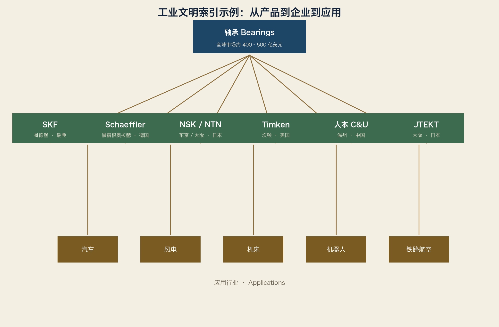

产业集群模板（Industrial Cluster Template）
用途：每一个产业集群（城市/地区/园区）都填这一张表。
规则：字段顺序不许改；没有数据的字段写“待核实”，不许留空或删除。
0. 模板使用说明
1. 复制本文件，按“编号-地名.md”命名（如 03-04-01-斯图加特大区.md）
2. 先填“基本坐标”和“世界定位”，再填企业与数据
3. 每个数字后面标注（年份，来源），格式示例：约 6,502 亿欧元（2024，Destatis）
4. 引用来源必须能追溯到年报、统计机构或行业协会
5. 每年至少更新一次“数据框”和“未来趋势”
1. 基本坐标
国家：____________
州/省：____________
地区/大区：____________
城市：____________
人口（城市/地区）：____________
面积：____________
GDP（城市/地区/国家占比）：____________
工业占 GDP 比重：____________
2. 工业历史
起始年代：____________
关键事件（最多 6 条，每条 1–2 行）：
1. ____________
2. ____________
3. ____________
4. ____________
5. ____________
6. ____________
3. 为什么形成
用 2.15 的检查表勾选，并补充：
[ ] 靠近市场（客户在本地）
[ ] 靠近原料/能源
[ ] 靠近人才/大学
[ ] 历史路径依赖（之前的产业是什么）
[ ] 产业集群效应（供应商网络）
[ ] 制度与协会（双元制、商会、展会）
[ ] 地缘与政策（边境、港口、补贴）
详细说明：____________
4. 世界定位
全球地位（一句话）：____________
全球第一/前三的细分领域：
1. ____________
2. ____________
3. ____________
5. 产业链与主要产品
产业链简图：
（用箭头画出本地最完整的链，标注企业）
主要产品：____________
6. 出口与全球市场份额
出口占本地制造业营收比重：____________
主要出口市场：____________
细分市场份额（带来源）：
1. ____________
2. ____________
7. 产业规模与就业
| 指标 |
数值 |
年份 |
来源 |
| 产业营收 |
|
|
|
| 制造业就业 |
|
|
|
| 企业数量 |
|
|
|
| 研发投入 |
|
|
|
| 专利数量 |
|
|
|
8. 高校
1. ____________（特点：____________）
2. ____________（特点：____________）
3. ____________（特点：____________）
9. 研究机构
1. Fraunhofer ____________（方向：____________）
2. Max Planck ____________（方向：____________）
3. 其他：____________
10. 隐形冠军清单（目标 50 家）
| # |
企业 |
城市 |
细分领域 |
全球地位 |
| 1 |
|
|
|
|
| 2 |
|
|
|
|
| … |
|
|
|
|
| 50 |
|
|
|
|
11. 上市公司（可选）
12. 世界第一企业（按细分）
13. 主要客户
1. ____________
2. ____________
3. ____________
14. 竞争对手（全球/国内）
全球层面：____________
国内层面：____________
新兴层面：____________
15. 上下游
上游（供应给本地）：____________
下游（本地供应给谁）：____________
外部依赖（本地不产、必须外购的）：____________
16. 为什么成功
1. ____________
2. ____________
3. ____________
17. 未来趋势
1. ____________
2. ____________
3. ____________
18. 推荐参观地点
博物馆：____________
工厂：____________
展会：____________
19. 参考文献
1. ____________
2. ____________
3. ____________
最后更新：____年__月__日
模板自检清单
[ ] 所有字段已填（无空白）
[ ] 数据带年份与来源
[ ] 隐形冠军清单至少 10 家（第一版）/ 50 家（定稿）
[ ] 产业链图有企业名字，而不是只有名词
[ ] “为什么形成”不是口号，是可验证的历史与地理事实
[ ] 已登记到“地图索引”和“工业文明索引”
词汇笔记（Vokabelnotiz）
| 中文 |
Deutsch |
English |
| 产业集群模板 |
Cluster-Vorlage |
Cluster template |
| 数据口径 |
Datenbasis |
Data basis |
| 待核实 |
zu prüfen |
To be verified |
| 统一格式 |
einheitliches Format |
Standardized format |
企业模板（Company Template）
用途：每一家企业都填这一张表。
目标：任何两家企业都能逐行横向比较。
0. 填写规则
1. 营收/员工以最新完整财年为基准，标注财年区间
2. “市场占有率”只写有出处的数字；无出处写“行业估算”或“待核实”
3. 竞争对手至少写 3 家
4. “为什么成为隐形冠军”必须写技术/护城河，不写形容词
1. 企业卡片
企业名称：____________
总部：____________
州/省：____________
国家：____________
成立：____年（创始人：____________）
员工：____________（截至____年）
营业额：____________（____财年）
所有制：家族/上市/基金会/集团子公司
2. 产品
核心产品 1：____________
核心产品 2：____________
核心产品 3：____________
3. 市场地位
细分市场：____________
全球份额：____________（来源：____________）
全球排名：____________
4. 竞争对手
5. 应用行业
1. ____________
2. ____________
3. ____________
6. 主要客户
1. ____________
2. ____________
3. ____________
7. 上下游
上游（关键供应商/材料）：____________
下游（直接客户类型）：____________
8. 为什么成为 Hidden Champion
核心技术：____________
护城河：____________
专利/标准：____________
研发中心：____________
全球工厂：____________
9. 地理与集群
所在产业集群：____________
为什么总部在这里：____________
本地化生产（德国/中国/美国等）：____________
10. 未来趋势
1. ____________
2. ____________
3. ____________
11. 信息来源
官网/年报：____________
行业报告：____________
最后更新：____年__月__日
示例：SEW-EURODRIVE（2024 财年公开口径）
企业名称：SEW-EURODRIVE GmbH & Co. KG
总部：布鲁赫萨尔（Bruchsal）
州：巴登-符腾堡
国家：德国
成立：1931 年
员工：约 22,700（2024）
营业额：超 42 亿欧元（2024）
所有制：家族企业（Sewing 家族/基金会体系）
产品：减速机、伺服电机、变频器、驱动自动化、移动机器人（MAXOLUTION）
市场地位：全球驱动技术领导者之一（企业自称+行业共识）
竞争对手：Siemens、ABB（含 Bosch Rexroth 竞品）、Nord Drivesystems、Bonfiglioli、Lenze、WEG
应用：汽车、物流、食品饮料、矿山、港口、机场、机器人
为什么在布鲁赫萨尔：1931 年 Ernst Blickle 与 Christian Pähr 在此创业；
位置处于斯图加特-卡尔斯鲁厄工业谷中间，靠近机械客户与人才
未来趋势：驱动即服务（SEW-EURODRIVE Digital）、移动机器人、AI 能效
词汇笔记（Vokabelnotiz）
| 中文 |
Deutsch |
English |
| 企业模板 |
Firmenprofil |
Company profile |
| 护城河 |
Burggraben / Wettbewerbsvorteil |
Moat / competitive advantage |
| 市场份额 |
Marktanteil |
Market share |
| 财年 |
Geschäftsjahr |
Fiscal year |
地图索引（Map Index）
用途：按“产业 → 国家 → 城市 → 企业 → 市场份额 → 页码”快速定位。
原理：这是全书目录的“产业版”；每写完一章，就更新一次索引。
1. 索引规则
第一级：产业
第二级：国家
第三级：城市/集群
第四级：企业
第五级：数据（份额/员工/营收）
最后：页码（纸质版）或章节链接（电子版）
2. 示例：机器人索引
机器人
├── 德国
│ ├── 奥格斯堡 → KUKA（2024 安装量德国 2.70 万台，IFR）→ 页码
│ └── 巴符州 → 博世/费斯托（机器人周边）→ 页码
├── 日本
│ ├── 山梨忍野村 → Fanuc → 全球最大之一 → 页码
│ ├── 北九州 → Yaskawa → 伺服+机器人 → 页码
│ └── 东京 → Kawasaki、Denso → 页码
├── 中国
│ ├── 深圳 → 大族、汇川 → 页码
│ ├── 南京 → 埃斯顿 → 页码
│ └── 沈阳 → 新松 → 页码
├── 美国
│ ├── 波士顿 → Teradyne/UR 生态 → 页码
│ └── 底特律 → 系统集成商 → 页码
└── 瑞士
├── 巴登 → ABB → 页码
└── 普法菲孔 → Stäubli → 页码
3. 示例：工业自动化索引
工业自动化
├── 德国
│ ├── 慕尼黑/纽伦堡 → Siemens → PLC/驱动/软件 → 页码
│ ├── 斯图加特大区 → Festo、Balluff、Trumpf、Dürr → 页码
│ ├── 卡尔斯鲁厄技术区 → SEW、Bruker → 页码
│ ├── 曼海姆 → Pepperl+Fuchs → 页码
│ ├── 埃森 → Turck → 页码
│ ├── 瓦尔德基希 → SICK → 页码
│ └── 腓特烈港/泰特南 → ifm electronic → 页码
├── 美国
│ ├── 密尔沃基 → Rockwell → 页码
│ ├── 波士顿 → Cognex、Teradyne → 页码
│ └── 奥斯汀 → NI → 页码
├── 日本
│ ├── 京都/大阪 → Omron、Keyence → 页码
│ ├── 名古屋 → Mitsubishi → 页码
│ └── 山梨/北九州 → Fanuc、Yaskawa → 页码
├── 瑞士 → 巴登 → ABB → 页码
├── 法国 → 吕埃 → Schneider Electric → 页码
└── 中国
├── 深圳 → 汇川 → 页码
├── 杭州 → 海康机器人 → 页码
└── 北京 → 和利时 → 页码
4. 索引表格式（每章一张）
| 产业 |
国家 |
城市/集群 |
企业 |
市场份额/地位 |
页码 |
| 机器人 |
德国 |
奥格斯堡 |
KUKA |
全球前四 |
p.xx |
| 机器人 |
日本 |
山梨 |
Fanuc |
全球第一集团 |
p.xx |
| … |
|
|
|
|
|
5. 更新规则
1. 每新增一个集群章节，在对应产业索引下加一行
2. 每更新一次市场份额，修改数字并加“更新时间”
3. 电子版用相对链接代替页码：如 ../01-第一卷-全球工业地图/03-第三章-….md
词汇笔记（Vokabelnotiz）
| 中文 |
Deutsch |
English |
| 地图索引 |
Kartenindex |
Map index |
| 目录 |
Inhaltsverzeichnis |
Table of contents |
| 页码 |
Seitenzahl |
Page number |
| 相对链接 |
relativer Link |
Relative link |
工业文明索引（Industrial Civilization Index）
用途：从“一个产品/部件”出发，一分钟查到整条知识链。
这是本书的“电话簿”：查任何东西都能找到它在工业世界里的位置。
1. 索引规则
产品/部件 → 主要企业（至少 5 家）→ 所在城市 → 产业集群
→ 供应链位置 → 应用行业 → 市场份额 → 未来趋势 → 页码
2. 完整示例：轴承（Lager / Bearings）
轴承
├── 企业
│ ├── SKF 哥德堡（瑞典） 全球第一集团
│ ├── Schaeffler 黑措根奥拉赫（德国） INA/FAG，汽车+工业
│ ├── NSK 东京（日本） 精密轴承
│ ├── NTN 大阪/柏原（日本） 汽车轴承
│ ├── Timken 坎顿（美国） 圆锥滚子轴承
│ ├── JTEKT 大阪（日本） 转向+轴承
│ └── 人本 C&U 温州（中国） 规模追赶
├── 所在产业集群
│ ├── 哥德堡（瑞典西海岸工业带）
│ ├── 黑措根奥拉赫-施韦因富特（弗兰肯工业带）
│ ├── 关西（京都-大阪精密带）
│ └── 温州-上海（中国民营轴承带）
├── 供应链位置
│ ├── 上游：特种钢（SKF 自炼钢）、保持架、密封件
│ └── 下游：汽车轮毂、电机、风电齿轮箱、机床主轴、机器人关节
├── 应用行业
│ ├── 汽车（约四成需求）
│ ├── 工业机械
│ ├── 风电与能源
│ └── 铁路与航空
├── 市场份额
│ ├── 全球轴承市场约 400–500 亿美元（行业估算）
│ └── SKF、Schaeffler、NSK、NTN、Timken 五强占大半（历史口径）
└── 未来趋势
├── 风电大轴承
├── 陶瓷/混合轴承
├── 状态监测（轴承=传感器）
└── 中国厂商向高端风电/机器人轴承爬升

3. 更多索引条目（草稿状态，待逐条扩写）
减速机
SEW-EURODRIVE（布鲁赫萨尔）→ Flender（波霍尔特）→ ZF（腓特烈港）
→ Nord（巴尔格特海德）→ Bonfiglioli（博洛尼亚）→ Wittenstein（伊格斯海姆）
→ 应用：机器人、输送、港口、矿山 → 趋势：一体化驱动+AI 诊断
直线导轨
THK（东京/山口）→ Hiwin（台中）→ NSK（东京）→ Schaeffler（黑措根奥拉赫）
→ 应用：机床、半导体设备、机器人 → 趋势：国产替代（南京工艺等）
伺服电机
Yaskawa（北九州）→ Mitsubishi（名古屋）→ Siemens（慕尼黑）→ Panasonic（大阪）
→ Fanuc（山梨）→ 汇川（深圳）→ 应用：机器人、注塑机、机床 → 趋势：直驱、AI 调参
工业相机
Keyence（大阪）→ Cognex（波士顿）→ Basler（阿伦斯堡，汉堡附近）
→ 海康机器人（杭州）→ 大恒图像（北京）→ 应用：3C、汽车、锂电、医药
→ 趋势：3D 视觉、AI 缺陷检测
工业传感器（接近/光电）
SICK（瓦尔德基希）→ ifm（泰特南）→ Balluff（诺伊豪森）→ Pepperl+Fuchs（曼海姆）
→ Turck（埃森）→ Omron（京都）→ 应用：汽车线、物流、食品
→ 趋势：IO-Link、AI 边缘传感
真空阀
VAT（瑞士哈格）→ 应用：半导体刻蚀/沉积设备 → 份额：约 75%（2023 年口径）
→ 趋势：先进封装带动真空自动化
隧道掘进机
Herrenknecht（德国施瓦瑙）→ 应用：地铁、铁路、跨海隧道
→ 趋势：无人化、全球基建周期
灌装线
Krones（新特劳布林）→ KHS（多特蒙德）→ Sidel（法国，利乐系）
→ 应用：啤酒、水、乳品、药品 → 趋势：PET 轻量化、数字孪生
4. 工业文明索引总表（模板）
| 产品/部件 |
企业 1（城市） |
企业 2（城市） |
企业 3（城市） |
应用行业 |
份额/地位 |
页码 |
| 轴承 |
SKF（哥德堡） |
Schaeffler（黑措根奥拉赫） |
NSK（东京） |
汽车/风电/机床 |
五强主导 |
p.xx |
| 减速机 |
SEW（布鲁赫萨尔） |
Flender（波霍尔特） |
ZF（腓特烈港） |
输送/港口 |
多极 |
p.xx |
| … |
|
|
|
|
|
|
5. 更新规则
1. 每条索引 = 一个产品词条；一个产品词条至少 5 家企业
2. 企业必须有城市；城市必须能链接到集群章节
3. 份额必须带年份和来源；没有来源写“待核实”
4. 目标：第一版 100 条，覆盖工业产品查询的 80%
词汇笔记（Vokabelnotiz）
| 中文 |
Deutsch |
English |
| 工业文明索引 |
Industrie-Index |
Industrial index |
| 词条 |
Eintrag |
Entry |
| 产品分类 |
Produktkategorie |
Product category |
| 可追溯 |
nachvollziehbar |
Traceable |